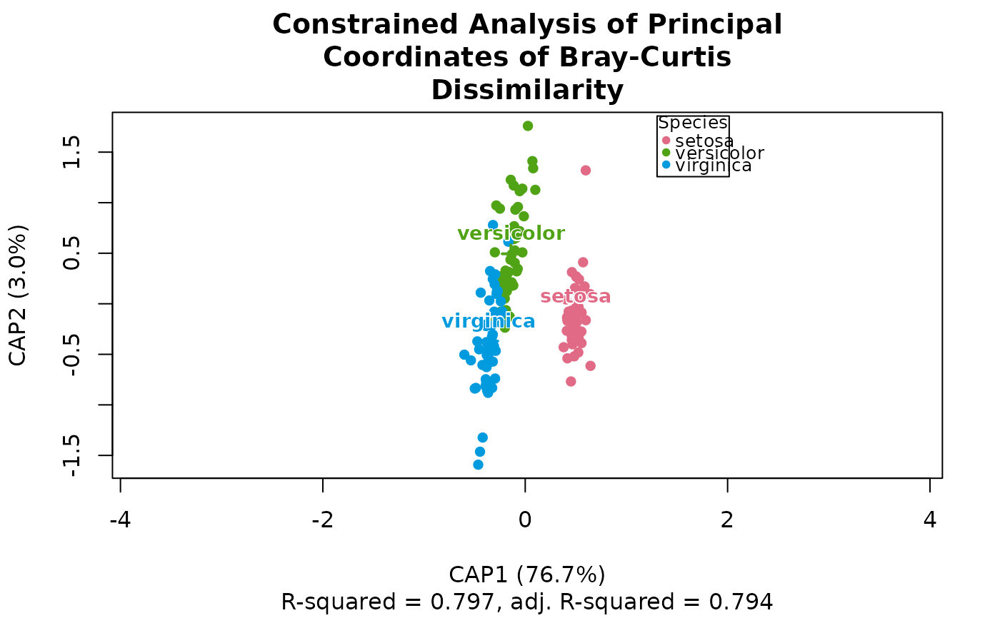

Constrained ordination of samples from their distances, like dbrda(),
but of the principal coordinates with positive eigenvalues only. Gives
the same results as vegan::capscale() (and so as
phyloseq::ordinate(method = "CAP")). For Euclidean distances it gives
the same results as dbrda().
Usage
capscale(dm, groups, data = NULL, formula = NULL, n_axes = 3L, cpus = n_cpus())Arguments
- dm
A
distobject, such as frombeta_div()orbray(), or a symmetric numeric matrix of distances. Must not containNAs or negative values. Alternatively, as invegan::dbrda(), a formula with the distances on its left-hand side and the constraints on its right, such asdm ~ treatment, in place ofdmandformula; the metadata may then be given second, as indbrda(dm ~ treatment, meta).- groups
The one variable that constrains the ordination: a vector or factor with one value per sample, matched to the samples in
dmby name when both are named, else in the same order asdm. Or, whendatais given, the name of one of its columns (or a vector with one value per row ofdata). Categories (factor, character, or logical) or a numeric covariate. The same asformula = ~ groups. Givegroupsorformula, not both.- data
Sample metadata: a data frame with one row per sample, holding the columns named in
groupsorformula. Rows are matched to the samples indmby row name, and rows for other samples are ignored; without row names, they must be in the same order asdm. Default:NULL.- formula
Instead of
groups, for models of several variables: a one-sided formula naming the variables indatathat constrain the ordination, such as~ treatment + ph. Factors, numeric covariates, and interactions are all allowed. Wrap variables inCondition()to remove their effect first (a partial analysis), as invegan::dbrda():~ treatment + Condition(site). With onlyCondition()terms, the result is the unconstrained ordination after removing their effect. A left-hand side, if given, is ignored. Givegroupsorformula: there is no default model. Default:NULL.- n_axes
The number of axes to return. Default:
3. Reduced, with a warning, to the number of axes with positive eigenvalues, which is at most \(n - 1\) for \(n\) samples.- cpus
How many parallel processing threads should be used. The default,
n_cpus(), will use all logical CPU cores.
Value
A numeric matrix with one row per sample and one column per axis,
as described in "Ordination result" below. Constrained axes come first,
named "CAP1", "CAP2", etc., then, if the constraints give fewer than
n_axes of them, unconstrained axes named "MDS1", "MDS2", etc. The values
are vegan's site scores ("wa" scores, scaling 2), as for dbrda().
Its attributes are:
method:"capscale".eig: The eigenvalue of each axis.prop: The proportion of the real inertia (seeinertia) that each axis explains, not counting the conditional inertia:eig / (trace - inertia[["imaginary"]] - inertia[["conditional"]]).vegan's "Proportion Explained".trace: The total inertia,vegan's: the sum of all eigenvalues of \(G\), including negative ones, asdbrda()'s.inertia: The total inertia split into four parts, which add up totrace: a named vector ofconditional: explained by theCondition()variables (0if there are none);constrained: explained by the constraints, after the conditions;unconstrained: the rest of the real inertia;imaginary: the sum of the negative eigenvalues of \(G\), whichcapscale()leaves out (0for Euclidean distances).
The first three add up to the real inertia,
trace - imaginary, the sum of the positive eigenvalues of \(G\).constrained_eig: Every non-zero constrained eigenvalue.r_squared: The proportion of the real inertia that the constraints explain,inertia[["constrained"]] / (trace - inertia[["imaginary"]]), asvegan::RsquareAdj(x)$r.squared.adj_r_squared:r_squaredadjusted for the number of constraint columns, asvegan::RsquareAdj(x)$adj.r.squaredand as fordbrda(). With conditions,vegantakes their proportion oftrace, not of the real inertia, and so doescapscale().biplot,centroids: As fordbrda().
Details
Method
With \(G = -\frac{1}{2}JAJ\) as in pcoa() and dbrda(), and its
eigen-decomposition \(G = V\Lambda V^T\), the principal coordinates with
positive eigenvalues are \(Y = V_+\Lambda_+^{1/2}\), and
\(G_+ = YY^T\) is the positive part of \(G\). capscale() is the
redundancy analysis of \(Y\) on the constraints, which is dbrda() with
\(G_+\) in place of \(G\). As in vegan, eigenvalues within
max(e, e * lambda1) of 0, for \(e\) = sqrt(.Machine$double.eps) and
\(\lambda_1\) the largest, count as 0.
For Euclidean distances (such as Euclidean, Hellinger, or Aitchison
distances), \(G\) has no negative eigenvalues, so \(G_+ = G\).
capscale() first looks for a negative eigenvalue, by block Lanczos
iteration on \(-G\) with products straight from dm (as pcoa()
finds the largest eigenvalues). It stops as soon as one is certain, and
otherwise runs until the smallest eigenvalue of \(G\) has converged.
Having found none, the rest is exactly dbrda()'s, in as little memory.
That is quick when \(G\) has many eigenvalues at 0, such as for
Euclidean distances between samples with fewer features than samples.
When the smallest eigenvalues are close together, convergence can take
many steps; after about \(n/10\) of them (each one pass over dm), when
going on would cost about as much as the full eigen-decomposition,
capscale() stops looking and decomposes \(G\), as below, which gives
the same results either way.
Otherwise, \(G_+\) needs every eigenvalue of \(G\), as in
vegan::capscale(): capscale() forms \(G\) (\(8n^2\) bytes, such as
200 MB for 5000 samples), reduces it to tridiagonal form, finds all of its
eigenvalues, and then the eigenvectors of the positive ones, or of the
others if they are fewer, by inverse iteration. That takes time
proportional to \(n^3\), though several times less than a full
eigen-decomposition: for 2000 Bray-Curtis distances, about 2 seconds on
one core, against 12 for vegan::capscale(). The reduction and the
eigenvectors are computed in parallel on cpus threads.
capscale() or dbrda()?
See dbrda(). In short: dbrda() analyzes the distances as they are,
and quickly for any number of samples; capscale() analyzes the closest
Euclidean configuration, so its eigenvalues are never negative, but it
ignores the rest and takes much longer for large non-Euclidean data.
Another way to avoid negative eigenvalues is to make the distances
Euclidean first, such as by the square roots of Bray-Curtis distances
(Legendre & Legendre 2012, Table 7.2), or with pcoa()'s correction,
and then to use dbrda().
Matching vegan
capscale() gives the same scores, eigenvalues, inertia (including the
imaginary inertia), \(R^2\), biplot scores and centroids as
vegan::capscale() given distances, up to the signs of the axes. As
there, distances are divided by \(\sqrt{n-1}\) when any is 4 or more
(see "Scale" in dbrda()). vegan::capscale() can also take a community
table, add a constant to the distances (add), or take their square roots
(sqrt.dist), and gives species scores; capscale() does not.
capscale() is named after vegan::capscale(). Anderson & Willis's (2003)
"canonical analysis of principal coordinates" (CAP) is a related but
different method.
Axis signs and reproducibility
As for dbrda(): each axis's largest score in absolute value is
positive, and results are identical from run to run and for any number
of cpus.
Ordination result
Every ordination function (pcoa(), pca(), rpca(), dbrda(), capda(),
capscale(), mds(), nmds(), isomap(), tsne(), umap(), and so
dist_ord()) returns the same kind of
object: a numeric matrix with one row per sample and one column per
axis, so that it can go straight into a data frame. Rows are
named after the samples, when the input has names. Columns are named
after the method: "PCoA1", "PC1", "RPCA1", "dbRDA1" or "CAP1"
(then "MDS1" for unconstrained axes), "MDS1", "NMDS1",
"Isomap1", "TSNE1", "UMAP1", and so on.
Its attributes always begin with these three, in this order, each with one value per column:
method: The method's ID, e.g."pcoa"or"nmds".eig: Each axis's eigenvalue, on the method's own scale:pcoa()andisomap()give the eigenvalues of Gower's centered matrix (sums of squares);pca()andrpca()give variances, which arepcoa()'s divided by \(n - 1\) for \(n\) samples; anddbrda()andcapscale()followvegan, which also divides by \(n - 1\) when any distance is 4 or more.NAformds(),nmds(),tsne(), andumap(), which have no eigenvalues.prop: The proportion of the total variance (or inertia) that each axis explains. Unlikeeig, it is comparable between methods, so use it to label axes.NAwhere it isn't defined.
Attributes particular to the method follow them, and last, the records
of how it was made (see ecodive_steps): dist, the distance
matrix's, for the methods that take distances, and ord, the
ordination's own (its method, display name and settings). The matrix has class
"ecodive_ord" (as well as "matrix"), so that print() lists the
other attributes by name rather than in full, and plot() draws the
samples on the first two axes, labelled from the attributes, with any
loadings, constraints and centroids on top (see plot.ecodive_ord()).
plot(ord, "Species", iris) colours the samples by a column of
metadata. Subsetting with [, or as.data.frame(), gives a plain
matrix or data frame without the attributes.
References
Legendre, P., & Anderson, M. J. (1999). Distance-based redundancy analysis: testing multispecies responses in multifactorial ecological experiments. Ecological Monographs, 69(1), 1-24. doi:10.1890/0012-9615(1999)069[0001:DBRATM]2.0.CO;2
Anderson, M. J., & Willis, T. J. (2003). Canonical analysis of principal coordinates: a useful method of constrained ordination for ecology. Ecology, 84(2), 511-525. doi:10.1890/0012-9658(2003)084[0511:CAOPCA]2.0.CO;2
Legendre, P., & Legendre, L. (2012). Numerical Ecology (3rd English ed.). Elsevier.
Examples
dm <- bray(iris[, 1:4])
ord <- capscale(dm, 'Species', iris)
plot(ord, 'Species', iris)

head(ord)
#> CAP1 CAP2 MDS1
#> [1,] 0.5066572 -0.26288381 -0.07396932
#> [2,] 0.5050815 0.26531512 0.31060632
#> [3,] 0.5565336 -0.08822428 0.21441482
#> [4,] 0.5347107 0.09086444 0.28072084
#> [5,] 0.5279706 -0.33653429 -0.05903183
#> [6,] 0.4111538 -0.26696879 -0.40145462
str(ord)
#> 'ecodive_ord' num [1:150, 1:3] 0.507 0.505 0.557 0.535 0.528 ...
#> - attr(*, "dimnames")=List of 2
#> ..$ : NULL
#> ..$ : chr [1:3] "CAP1" "CAP2" "MDS1"
#> - attr(*, "method")= chr "capscale"
#> - attr(*, "eig")= num [1:3] 2.234 0.086 0.244
#> - attr(*, "prop")= num [1:3] 0.7674 0.0296 0.084
#> - attr(*, "trace")= num 2.64
#> - attr(*, "inertia")= Named num [1:4] 0 2.32 0.591 -0.274
#> ..- attr(*, "names")= chr [1:4] "conditional" "constrained" "unconstrained" "imaginary"
#> - attr(*, "constrained_eig")= num [1:2] 2.234 0.086
#> - attr(*, "r_squared")= num 0.797
#> - attr(*, "adj_r_squared")= num 0.794
#> - attr(*, "biplot")= num [1:2, 1:3] -0.275 -0.695 0.962 -0.719 0 ...
#> ..- attr(*, "dimnames")=List of 2
#> .. ..$ : chr [1:2] "Speciesversicolor" "Speciesvirginica"
#> .. ..$ : chr [1:3] "CAP1" "CAP2" "MDS1"
#> - attr(*, "centroids")= num [1:3, 1:3] 0.499 -0.141 -0.357 -0.125 0.494 ...
#> ..- attr(*, "dimnames")=List of 2
#> .. ..$ : chr [1:3] "Speciessetosa" "Speciesversicolor" "Speciesvirginica"
#> .. ..$ : chr [1:3] "CAP1" "CAP2" "MDS1"
#> - attr(*, "dist")= Bray-Curtis Dissimilarity (metric = bray, norm = none, pseudocount = 0)
#> - attr(*, "ord")= Constrained Analysis of Principal Coordinates (method = capscale, groups = Species, n_axes = 3)